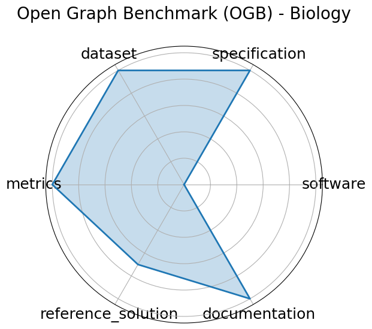

Date: 2020-05-02
Name: Open Graph Benchmark OGB - Biology
Domain: Graph ML
Focus: Biological graph property prediction
Keywords: node prediction, link prediction, graph classification
Task Types: Node property prediction, Link property prediction, Graph property prediction
Metrics: Accuracy, ROC-AUC
Models: GCN, GraphSAGE, GAT
Citation:
Weihua Hu, Matthias Fey, Marinka Zitnik, Yuxiao Dong, Hongyu Ren, Bowen Liu, Michele Catasta, and Jure Leskovec. Open graph benchmark: datasets for machine learning on graphs. 2021. URL: https://arxiv.org/abs/2005.00687, arXiv:2005.00687.
bibtex: ``` @misc{hu2021opengraphbenchmarkdatasets,
archiveprefix = {arXiv},
author = {Weihua Hu and Matthias Fey and Marinka Zitnik and Yuxiao Dong and Hongyu Ren and Bowen Liu and Michele Catasta and Jure Leskovec},
eprint = {2005.00687},
primaryclass = {cs.LG},
title = {Open Graph Benchmark: Datasets for Machine Learning on Graphs},
url = {https://arxiv.org/abs/2005.00687},
year = {2021}}
```
Ratings:
Software:
Rating: 5
Reason: All necessary information is provided on the Github
Specification:
Rating: 4
Reason: Tasks node/link/graph property prediction are clearly specified with input/output formats and standardized protocols; constraints e.g., splits are well-defined. No constraints.
Dataset:
Rating: 5
Reason: Fully FAIR- datasets are versioned, split, and accessible via a standardized API; extensive metadata and documentation are included.
Metrics:
Rating: 5
Reason: Reproducible, quantitative metrics e.g., ROC-AUC, accuracy that are tightly aligned with the tasks.
Reference Solution:
Rating: 3
Reason: Multiple baselines implemented and documented GCN, GAT, GraphSAGE . No contraints.
Documentation:
Rating: 5
Reason: All necessary information is included in a paper.
Average Rating: 4.5
Radar Plot: 